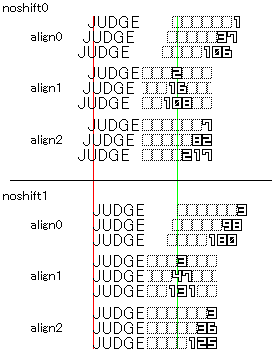
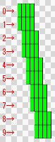
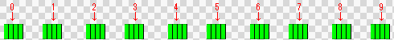
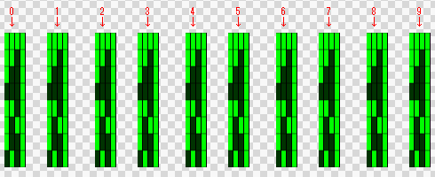
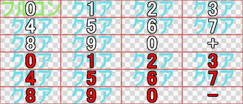

キーコンフィグとスキンセレクトとスキン種別
キーコンフィグとスキンセレクトにはスキン固有の特殊定義が存在しないため
スキン種別に捉われずに一部機能が参照可能なのでRB選曲のように「別なスキンに擬似的に実装」することが出来ます。
スキンプレビューも現行のLR2では特殊定義を使わなくなっているのでRB選曲でも実装は可能でしたが、断念した理由は単純にスペースが足りなかったからです。
（スキンやスキンオプション切り替え時には必ずバックグラウンドでスキンプレビュー用パーツの再読み込みが行われるため、プレビューを非表示にしても負荷は変わりません）
また、キーコンフィグを積まなかったのは利用頻度が低く、万が一マウスやボタンが暴発すると面倒だからです。
今にして思えばスキンセレクトとキーコンフィグはまとめて1つにした方がCSっぽかったかなぁとか。
どうやら当該スキン以外では制限付きのようです。スキンセレクト以外ではスキンプレビューは使えず、キーコンフィグ以外ではキー配置の変更は出来ません。
実用性は低いですがこういうのも可能ではあります。
※画像はイメージです。
LR2でのDSTオプション遷移
本来は仕様のとこに書くべきなんですが、なかなか興味深かったので応用に。
LR2では通常、選曲→決定→プレイ→リザルト（→コースリザ）間では曲に関連するオプションは変化しません。
（現在のスキンでの曲オプション状態は次のスキンでも維持されます）
ここまでは当然なんですが先日組みあがった
DSTオプションの動作解析システムで色々試していたところ、リザルト→選曲間でも大部分のオプション値が引き継がれることが分かりました。
何パターンか試した感じだとop70～349までは大体引き継げるようです。
一部のオプションはLR2起動直後の選曲画面で既におかしな値を返すので実装の際にはなるべく自前で動作DSTオプションを解析できる環境があった方が良いと思います。
取り敢えずうちで軽く試した結果だけ纏めておきます。この利用方法では以下の値の使用はなるべく避けましょう。
- op80番台はプレイスキン以外では正常に動作しません
- op100～145は今回の値かどうか判別できません
- op280番台はどのシーンでも必ずいずれかの値がONになります（大体は280か289）
- op333 トライアルが更新された はリザルト以外では正常に動作しません（ほとんど常時ON）
※動作オプションはスロット分岐とIF分岐で特性が微妙に異なります。（ここに挙げているものは全てIF分岐の測定結果）
これを使うと例えば「☆12以上の譜面を赤ゲージでAAAクリアした後の選曲画面背景」をピンポイントで変更出来ます。
選曲BGMには手が出せないので旧CSシリーズのアレにはあと一歩な感じも否めませんが夢は広がりますね。もうちょい早く知りたかったです。
なお、コースリザルトからの引き継ぎは出来ないっぽいですが、
スキンセレクトのリザルトプレビューからは引き継げたので動作確認はここから行ったほうが早いと思います。
※スキンプレビューでクリアリザルトプレビューを表示するにはスキンセレクト動作開始直後のプレイスキンプレビューを
曲進行バーが停止するまで見届ける必要があります。これより前に別なスキンに切り替えるとFAILED扱いになります。
この方法で表示されるリザルト画面は必然的にスコア/ゲージ共に100%でのフルコンクリアになります。
ちなみにオートプレイ時のリザルト画面はこの方法でしか見れません。
関連リンク：スキンセレクト画面の特性
疑似ジャッジ・疑似コンボ定義
通常、ジャッジとコンボはそれぞれNOWJUDGE_1P、NOWCOMBO_1P定義を使いますが、
op240番台および260番台（1P PERFECT～1P 空POOR・2P PERFECT～2P 空POOR）までの各判定オプションはどんな状況でもどれか一つしかONにならないため、
timer46 1P ジャッジタイマーと各判定オプションを組み合わせて判定画像を参照することで、
NOWJUDGE定義を使わずに判定定義を構成することが出来ます。
同様にtimer46と各判定オプションを組み合わせてNUMBER定義のnum104 1P nowcomboを定義すればコンボ定義も作れます。
（ただしnum104 nowcomboは純正コンボに比べて値の反映が遅れる場合があります）
純正定義は特殊定義なのでopスロット分岐が使えないため、最初から最後まで各判定のモーションは同じになりますが、
疑似定義を使えば（コンボが偶に遅れるものの）opスロットによって動的にモーションを変化させることが出来ます。
ランクやゲージ量に応じて判定を切り替えたりと色々応用が利きます。
纏めてて気付きましたが、要するにNOWJUDGEやNOWCOMBOといった特殊定義は、
noshift0を使うことでジャッジとコンボを1つの定義として扱い、全体を中央寄せするためにのみ必要なのであって、
noshift1、つまりコンボの桁数によるx座標の左シフトを考慮しないのであればそもそも使う必要が無い定義と言えます。
（NOWJUDGE・NOWCOMBOのindex値による定義発動条件はいずれもop240・260番台と同じ）
3列コンボ
疑似ジャッジとコンボの応用例その1。
LP EXでの3列コンボ実装時にみすてぃ氏に軽く助言はしたものの、
実際の定義が.REDの予想よりも遥かに込み入っていたためちょっと自信無いんですが簡単に纏めますと
- op240番台とtimer46を用いた定義で判定文字とコンボ数値を参照する
- 1～3鍵/7～9鍵タイマー動作時はそれぞれ反対側のコンボ表示にレーンカバーを被せる
- 456鍵タイマー動作時はセンターコンボ表示優先
大体こんな感じだと思います。
一応レーン周りの立体構造図作ってみましたが複雑過ぎてあまり意味が…
3列判定表示は既にLP EXに実装されているので
詳しくはOA_LP_EX/standard/common_csv/3line_frame.csvと3line_judge.csvを参照。
構造上の欠陥としてコンボ表示の上にノーツが重なって表示されたりコンボ表記が横に瞬間移動したりするんですが
.REDの考えていたLR2での9keyスキンの限界点を僅かに越えている奇跡の技。
疑似定義と純正定義の併用によるコンボ桁数分岐
疑似ジャッジとコンボの応用例その2。純正ジャッジとの併用による桁数別参照です。
具体的な挙動としては某ゲームの某バージョンにあった『10コンボを超えると判定文字が光りだす』といったもの。
（当時はピカグレという概念はまだ無く、単純に判定文字が点滅するだけ）
この応用方法で最も重要なのがNOWJUDGEとNOWCOMBOの特性です。
仕様と言うよりはほとんどバグなんですが、これを逆手に取るのがこの手法の肝。
NOWJUDGEとNOWCOMBOのパラメータと表示座標の関係をまとめると以下の図の様になります。

純粋にスキン用の定義として考えるとnoshiftに関わらずalign0は使い道が無いんですが、
よくよく見ると唯一、桁が上がると初期位置にスペースが出来ることが分かります。
この時のx座標移動幅はDST_NOWCOMBO_w値/2、つまり幅1280pxの数値画像を10個使ってNOWCOMBOを組めば
桁が上がると同時にコンボ数値座標は左に640pxシフトして自動的に画面外に消えます。
NOWJUDGEもnoshift0にしておくことでNOWCOMBOと同じ幅だけ左にシフトして画面外行きです。
背面に疑似ジャッジと疑似コンボを仕込んでおけば『10コンボ繋ぐと切り替わる判定』になります。
配置構成のイメージはこんな感じ。NOWCOMBOのxy座標はNOWJUDGEからの相対座標になるため計算が色々面倒です。
また、参考画像ではNOWCOMBOをketa5で作ってますが、
これはコンボの値がketaを超えた際に桁が詰まって数値が画面内に戻ってくるのを避けるためです。（この特性はNUMBER定義と同じ）
注意点としては上からカバーを被せているだけなので、透過や拡縮との相性が悪いところです。
疑似定義はいずれもその動作を停止させておく方法が無いので、純正定義の下で常に動作している形になるため、
あまり派手なモーションは10コンボ以下でも純正定義からはみ出てチラチラ見えてしまう可能性があります。
※疑似ジャッジ定義をNUMBER定義+num104で構成するという荒業で桁数別参照させれば別な道が見つかるかと思って試してみましたが、
幅1280pxの3サイクル×3色点滅NUMBER定義は負荷が高過ぎたのか、先読み定義を入れても最初の1ノーツ目がカクつくという異常事態に。
DST_BAR_BODY定義の座標補間と特殊配置
DST_BAR_BODY定義はON/OFFいずれも曲リストスクロール時に前後のindex値との間の座標を補間する形で動きます。
また、曲バー上に表示する動的要素、つまり曲タイトルや曲難易度はいずれも別定義での相対座標で指定されるため、
曲バー自体のサイズに関わらず常に一定の位置に表示されます。
このため、曲バー自体のサイズをかなり大きめに取った上で配置を調整することで選曲背景にレコード画像を表示することが出来ます。
黒部分がLR2ウィンドウ、灰色の枠が曲バー1本分のサイズ、☆マークと曲タイトルはそれぞれ相対座標指定の動的要素、
赤矢印がDST_BAR_BODY定義のindex値の流れ、オレンジの●が曲バー内に入れておくレコード画像です。
緑の☆と●は巨大な難易度レベル表示で再現されるレコードレーベル面で、0～9までの10通りxBeginner～Insaneまでの5通りで全50色使用できますが、
これを実装すると2桁の難易度レベルは表示出来なくなります。
aの地点（曲リストの終端）からdの地点に直接index値を繋げるとリストスクロール時に画面内を斜めに横切ってしまうため、一度b地点（右画面外）に飛ばします。
その後画面内に被らないようにc地点→d地点を経由させ、レコード画像だけが画面内に表示されるような形で曲バーを配置します。
参考画像ではLR2ウィンドウ内に表示しているレコードは全部で3枚ですが、画面外に消える際の座標移動も考慮してd地点とh地点の座標も用意してます。
つまり、この構成の選曲スキンでは『画面内に表示したいレコード数+画面外移動時の座標4個（bとcとdとh）』が実際の曲リスト以外に必要な定義数となります。
DST_BAR_BODY定義では最大30本まで曲バーを用意することが出来るのでこの場合だと曲リストとして利用できる個数は30-3-4で23本という事になります。
※実際にはb地点のx座標は相当大きい値を使わないと画面外に消える際に『消えていく様子』が見えてしまうので注意。
また、b地点のx座標が限りなく大きい場合はc地点の定義は不要な可能性が高いです。（試してません）
※曲タイトルが極端に長い場合はf地点では特にタイトルが画面内に表示される恐れがあります。
※曲バー定義をレコード込みのサイズで作った場合、必然的にフォルダバーやコースバーなども同じサイズで作る必要があります。
ボタン定義のボタン以外の用途
DX+ではHAZARD/P-ATTACK/G-ATTACK使用時の%表記点滅に利用したのでこれを参考に解説。
DSTオプションではノーマル/赤ゲージでしか分岐出来ないため、例えば「HARD使用時のみ」といった条件を使うことが出来ません。
そこでゲージオプションボタンを画像パーツとして扱うことで擬似的に挙動を変更する方法をとっています。
フレームパーツ内に％表記ボックスをボタン用画像として複数個配置しておき、
これを上から重ねて点滅表示させることで％数字そのものが点滅しているように見せています。
（詳しくはDX+のAC7left.csv内を「G-ATTACK用グルーヴカバー」で検索）
基本的には「上から被せる」事しかできないので、条件を満たした場合に表示するor隠す、
といった限定的な使い方しか出来ないため、実装には何らかの工夫が必要ですが応用の幅は広いです。
これと同様の手法でグルーブゲージにエフェクトを掛けることも可能ですが、
ゲージの点滅は半透過点滅ではなく、明暗点滅なのでもう一捻りしないといけません。
また、ゲージ関連の分岐はLR2の仕様上リプレイとの整合性が取りにくいので気を付けましょう。
※プレイスキンのDSTによるノーマル/赤ゲージ分岐は、IF分岐ではその時に使用しているゲージオプション優先になります。
（リプレイでのゲージ関連DSTオプションは切り替えがワンテンポ遅れます）
テキスト連動パーツ
例としてRBコースリザルトの段位別リザルトの説明を。
段位によって背景画像を切り替える、と考えると難易度高いんですがやってる事はlr2fontファイルで「段位漢数字のみを640x480の画像で表す」というもの。
lr2fontで漢数字の初～十と、皆伝用に「皆」の文字（以下、識別文字）だけ個別の画像を定義し、それ以外の文字は全て1x480の画像を使い、#M定義（文字間隔）を-1にします。
これで一文字につき-1pxシフトするため全体の文字数に関わらず、初～十と皆の文字画像を所定の位置に表示出来ます。
※他の文字もちゃんと定義しておかないと挙動がおかしくなります。
RBコースリザルトでは更に「発」の文字に640x480の透明画像を割り当てることで発狂段位の場合のみ右に640pxシフトさせて発狂用と通常用で別々の画像を表示させています。
このため、一文字当たりの横幅は発狂用と通常用合わせて1280x480になっています。
発狂用と通常用で別な画像を表示させることが可能だと気付いたのがv1.00公開の5日前だったため、
RBコースリザでは色違いを表示する形を取りましたが、これは当然色違いじゃなくても大丈夫です。
注意点はマニュアルにも書きましたが、常に一文字しか表示できないこの方法では必然的に左側の識別文字が優先になります。
例えば 「段位認定 十五段」の場合には十段用リザルトが表示されます。
また、公開後に何回か問い合わせが来ましたが段位数字の半角/全角英数表記には対応していません。
単純に面倒だったのも大きいですが「10段」表記の解決案が咄嗟に思い付かなかったので。
このフォーマットのlr2fontファイルは誰が作っても大体同じものになるので利用したい方はご連絡下さい。
ファイルの場所はLR2files/Theme/RED_BELT/font/Gradefont_SPBG.lr2font です。
また、このlr2fontファイルでは上位階層への相対参照も使っているのでちょっと離れたフォルダのファイルを使いたい場合もご参考下さい。
スキン側のテキスト定義はLR2files\Theme\RED_BELT\CourseResult\grade.csv内を「テキストを背景画像扱いに」で検索して下さい。
※関連定義近辺のコメントにある右寄せ云々は開発段階のもので現行フォーマットではalign0（左寄せ）で大丈夫です。
※公開してしばらく経つまで気付きませんでしたが、LR2公式段位には通常皆伝が存在しませんので
この方法だと公式段位で皆伝リザルトが表示されるのは「発狂皆伝」のみです。滅多に見てもらえないので注意。
※半角/全角/大文字/小文字が面倒だったので実装しませんでしたが「overjoy」のいずれかの文字を使うことでoverjoy用リザルトも可能っちゃ可能です。
誤爆の可能性が高いのとゴリラの上を表現するイラストが思い付かなかったので止めましたが。
※RBリザルトのIRメッセージでも参照する識別文字は異なりますが同じ手法を使っています。
NUMBER定義のketaとalignの組み合わせによる特殊参照
alignはketa数の中で右寄せ(=0)か左寄せ(=1)か中央(=2)を指定しますが、表示桁数が足りない場合にはalignによって表示される値が異なります。
例 本来1234と表示される項目に対してketa=2を使用した場合
- align=0の時は12のみ表示
- align=1の時は34のみ表示
- align=2の時は12のみ表示
これによりNUMBER定義keta=1で数値の先頭/終端桁のみを参照することが出来るため、本来DSTオプションでは分岐出来ないパターンで分岐させることが可能です。
（馬鹿でかい数字画像を使って画面外の座標を指定すれば先頭/終端桁以外も参照可能 *後述）
例 ミスカウントが0の時に「ノーミス」と表示する場合
align0keta1でミスカウントを参照し、数字画像の0部分にのみ「ノーミス」と打ち込んでおく
→ミスカウント10や20の場合は1や2になるため画像は表示されず、0の場合のみ画像が表示される
RBリザの全一表示やボーダークリアなど、リザルトを中心に応用が利きます。
先頭/終端桁以外を参照するにはちょっと負荷が高すぎるのでリザルト以外での参照には注意が必要です。
なお、以前RBリザでこの参照方法絡みの不具合が発生した際、「分割方向で特性が変わる」と推測していましたが
後の追跡調査により単にalignの指定ミスだったと判明しました。その節ではお騒がせして申し訳ないです。
テキスト定義を用いたバーグラフ
詳しくはht51 -Deep Forest- v2選曲スキン参照。ht51v2_select.csv内を「発狂バー用」で検索して下さい。
この手法の肝は文章にすると「テキスト定義を用いた数値データの桁数別参照」。
基本概念は
fivemaniaのダンサーに近いんですが、この方法には黒カバーが不要という利点があります。
EX LEVEL以外の数値はNUMBER定義で参照できるため基本的にはEX LEVEL専用の手法ですが、
このalignの使い方は他の様々な定義に応用出来るので覚えておいて損はないです。
RB選曲でもEX LEVEL表示機能で「EX LEVEL=0の場合のみ"0"を表示しない」という動作が必要になったんですが
EX LEVELはテキスト定義でしか呼べないので、桁数ごとに異なる画像を参照するために同じ手法を使ってます。
こっちの方が図にし易かったのでRB選曲の例で解説。（ここでの図解は厳密にはテキスト定義のNUMBER定義扱い）
黒の太字がEX LEVELで緑・赤・青はそれぞれ別のテキスト定義を表しています。
各定義のalignと役割は図参照。なお、図ではそれぞれのy位置をずらしていますが実際には同じ高さに表示します。
- EX LEVELが一桁の時（図の上、EX LEVEL=5）
赤定義と緑定義はそれぞれ左と右に寄せているため一桁の場合は画面外に表示されます。（つまり表示されない）
青定義のみ中寄せで画面内に表示され、発狂レベル5となります。
- EX LEVELが二桁の時（図の下、EX LEVEL=25）
赤定義と緑定義の1桁目と2桁目が画面内に現れて、同時に青定義は画面からはみ出します。
この時の表示は発狂レベル25になります。
青定義の「0」を透明にしておくと「発狂レベル0の時だけレベル数字自体を表示しない」定義になります。
ht51ではこの次の解説にある「NUMBER定義のバーグラフ参照」と併用し、
TEXT定義→NUMBER扱い→BARGRAPH扱い とする事でほぼ完璧な発狂レベルバーを実装しています。
ここの解説風に言えば応用定義を2つ組み合わせている形になります。moge-laaさんマジ天才。
（ただ画像をじっくり見ると分かるんですが、EX LEVEL3桁時に表示がおかしくなります）
注意点としては青定義が2桁時にしっかり画面外に出るように横幅を調整するところくらいでしょうか。
定義自体の難解さも超一級品ですが、この安定度は応用定義の中でもトップレベルです。
この方法を使えば理論上、テキスト定義で参照できる全ての数字でグラフが組めます。
最大値が決まっている場合であればおそらく擬似的なスライダーも表現出来るはずです。
「NUMBER定義のketaとalignの特殊参照」以上の負荷が掛かるのと結構な数のフォント定義を消費するので
実装する場合は設計段階で組み込んでおかないと後からの追加は結構メンドイです。
NUMBER定義を用いたバーグラフ
おおよそ上記と同じ作りでNUMBER定義型のグラフやスライダーも実装可能です。
こちらも一桁目と二桁目で別々の画像を参照するところが肝。
.REDは今のところグルーブゲージを参照する以外に面白い応用方法が思い付かないのでとりあえずそれを例に。
一桁目と二桁目を別々なNUMBER定義で参照し、これらを重ねて定義します。
二桁目はht51 -Deep Forest- v2/Select/hakkyo_bar/hakkyo_bar_dai.png の下半分のように
一桁目表示部分だけ穴を空けた特殊なゲージ画像が必要なので注意。
alignによっては11分割NUMBER定義（裏0あり）じゃないと表示位置がズレます。
また、実際には画面内に重複しないように上記テキスト定義同様、横幅を大きめに取る必要があります。
三桁になった時（100%時）は00%時と同じ画像になってしまうので、op240 1P 100% を使って100%状態のゲージも上から重ねておきます。
そこそこ重くなりますが粒の数を任意の数に変更出来る点に加えて、GROOVEGAUGE定義と違って
ゲージ右端のアニメーションを無効化する事が可能なのでちょっと面白いゲージにはなります。
ただし、NUMBER定義で参照されるグルーブ数値は2%刻みなのでこの方法でも最大50粒が限界です。
見た目だけなら100粒でもいけますがどのみち2%ずつしか動きません。
また、定義と画像サイズが増えてしまいますが、ゲージ一桁目をop230番台のグルーブゲージ量別分岐でガッチリ分ければオリジナルのゲージアニメーションを実装することも可能です。
この場合は10％刻みで個別のcycleやtimerを設定出来るのでBPM連動やDJランク連動、ゲージ量連動などの変則的なアニメーションパターンが組めます。
ちなみにClassicのゲージアニメーションは次期バージョンからBPM連動になる事が確定しています。試作品が素敵過ぎた。
※2%上がるとゲージ1粒分右にシフトする数字画像が必要です。
色々試しましたが本体側の仕様上分割定義は横方向優先であるため、
最終的には横分割NUMBER定義にしないと危険なサイズになるので最初に縦分割で形だけ整えてから

横分割に並べ替えて

縦にズラッとコピーしまくってからアニメーションパターンを組む、という手法が一番楽でした。

※見れば大体分かるかと思いますが、LR2純正のゲージ定義と比べて結構なサイズの画像が必要です。
（試作品は1000x2000くらい使ってます）
※緑ゲージ・赤ゲージに加えて緑→赤ゲージ（ゲージ80%前後）を作らないといけません。
※50粒以外だと粒数計算がスゲー面倒です。（上記に加えて4・5粒混在パターンが必要になります）
なお、ゲージ関連の分岐はLR2の仕様上リプレイとの整合性が取りにくいので気を付けましょう。
※プレイスキンのDSTによるノーマル/赤ゲージ分岐は、IF分岐ではその時に使用しているゲージオプション優先になります。
（リプレイでのゲージ関連DSTオプションは切り替えがワンテンポ遅れます）
複数個でセットになっている子csvをランダムで参照する（二重INCLUDE）
①単体csvの分岐
| ...aaa\test-1\bbb.csv
...aaa\test-2\bbb.csv ： |
上記のファイル構成で
#INCULUDE ...aaa\test-*\bbb.csv
というランダム分岐は使用できない。
しかし
| ...aaa\bbb\test-1.csv
...aaa\bbb\test-2.csv ： |
この構成で
#INCLUDE ...aaa\bbb\test-*.csv
ならランダム可。
②複数csvの同期分岐
①を踏まえた上で
| ...aaa\bbb\test-1.csv
...aaa\bbb\test-2.csv ： ...aaa\ccc\test-1.csv ...aaa\ccc\test-2.csv ： |
これらのファイル群から同じファイル名のcsvを同時にランダムで選択したい場合、
#INCLUDE ...aaa\bbb\test-*.csv
#INCLUDE ...aaa\ccc\test-*.csv
とするしかないが、これでは別々なcsvを参照してしまう可能性が出てくる。
そこで
| ...aaa\include\test-1.csv
...aaa\include\test-2.csv ： |
を作成し、各csvから更にINCLUDEを使って子csvにリンクさせる。
CUSTOMFILE命令による画像と子csvの同期分岐
以前試した時は失敗した気がしたんですがLPforWide（現LP EX）での設定を見て正解が分かりました。
CUSTOMFILEでの対象をフォルダにしておき、そのフォルダ内にIMAGE命令を記述した子csvと画像を入れることで、
スキンオプション側でフォルダが固定されると画像と子csvが一緒に切り替わる、という流れ。
差分製作時に子csv必須なので汎用性がやや落ちる（差分製作難易度が高くなる）のがネックですが、
それをカバー出来るくらいの拡張性があります。（フレームごとに専用の組立モーションを使ったりとか）
また、CUSTOMFILEで参照する子csvの切り替えが可能という事は、CUSTOMOPTION命令じゃなくても良くなるので
オプション分岐項目を20個以上実装できるという事でもあります。
CUSTOMFILEからの子csv指定も久々に試したら普通に動いたので、後々選択肢を追加する場合がある機能はこれの方が良さげ。
900番台のオプションを消費しない・子csv作ってフォルダに入れるだけ、というのは魅力的です。
が、v2.8系で採用しなかったのはプリセットのようにSETOPTIONからの一括固定が出来ない為です。
バトルボタンの画像定義分岐
バトルボタンではSP/DP/9keysによってボタンの機能が異なるため、
バトルオプション用ボタンの項目名はテキスト定義で動的にボタン文字を切り替えるのが一般的ですが、
やや強引ではありますが以下の方法で個別のボタン画像を表示させることが出来ます。
DOUBLE BATTLE・GHOST BATTLE・SP TO DPがONの時は元データ種別がSP・DP共にONになるため、
これを逆手にとって各鍵盤種別ごとにがっちり分岐させます。
| op160 and op!162 元データが7keys かつ 元データが14keysではない
or op161 and op!163 元データが5keys かつ 元データが10keysではない |
SP用バトルオプション（BATTLE～） |
| op!160 and op162 元データが14keys かつ 元データが7keysではない
or op!161 and op163 元データが10keys かつ 元データが5keysではない |
DP用バトルオプション（COUPLE～） |
| op160 and op162 元データが7keys かつ 元データが14keys
or op161 and op163 元データが5keys かつ 元データが10keys |
SP用バトルオプション（BATTLE～）
※DOUBLE BATTLE or GHOST BATTLE or SP TO DP |
| op164 元データが9keys | 9keys用バトルオプション（～9 TO 7～） |
リザルトスキンではこの分岐だと何故かGHOST BATTLEが上手く表示されませんでした。
オプションスロットでの分岐では3条件までしか設定できないため、1つの定義につき4条件が必要なこの方法では
アルファブレンドや加算などの透過が含まれる参照方法の場合だと全分岐パターン（7定義）必要です。
RB選曲とリザルトで使っていますが確かリザルトの方が分かりやすいはずなのでRED_BELT/Result/result.lr2skinを「//ボタン画像(バトル7keys)」で検索。
なお、選曲スキン以外では元データの鍵盤種別は変化しないため、#IF命令を使ったOR分岐でも行けるかもしれません。（未確認）
リザルトでのプレイスキンとの連携によるクリアマーク更新分岐
プレイスキン側でop100番台によるプレイ前のクリアマーク画像の分岐読み込みを行い、
その画像をCONTINUE命令で引き継ぎリザルトスキン側で再度op100番台の分岐を掛けて更新を割り出します。
コースモードでも同様の機能を実装するにはリザルト後に再びプレイスキンに戻る場合を考慮して
プレイスキン側もCONTINUE命令を使わなければならないので分岐読み込みは決定スキンの段階で行う必要があります。（RB SKIN LINKオプション）
|
|
決定スキン | プレイスキン | リザルトスキン | コースリザルト |
| 単曲プレイ時 | ― | 分岐読み込み | 分岐表示 | ― |
| コースプレイ時 | 分岐読み込み | CONTINUE | CONTINUE | 分岐表示 |
また、参考画像には写っていませんがop100番台は元々選曲画面でのクリアマーク表示オプションであるため、
上位のクリアマークで上書きされていく（下位のクリアマークの参照が行えない）仕様なので、
これらのクリアマークとは別枠でクリア失敗時の分岐用にゲージオプションボタンもセットで読み込んでいます。
（HARDクリア済みの譜面をEASYでクリアしてもop102 EASY CLEAREDはONになりません。この分岐をオプションで行うためにはop60番台を使います。）
詳しくは実際のスキン画像で確認して下さい。
分岐読み込みはOA_DX+/setting/result_parts.csv、
画像ファイルはRED_BELT/Result/Clear_Markフォルダ内参照。
分岐表示はRED_BELT/Result/UPDATE/ACtype1P.csvかCourse.csvを「//クリアマーク更新」で検索して下さい。
なお、ASSISTクリア（op142）がONの時はEASYクリアも同時にONになっているので、
ASSISTも表示したい場合はIF op142→ ELSEIF op102の順に分岐させないとASSIST画像を取得出来ません。
※ASSISTクリアはASSIST抜きでクリアしても消えないのでASSIST→EASYの更新マークは実質更新無し扱いになります。
初フルコン時はこれで対処可能ですが2回目以降のフルコン時にはプレイスキン・リザルトスキン共に
フルコンボ扱いになるため、厳密に今回フルコンしたかどうかは判別できません。このため、もう一手間が必要になります。↓に続く。
既フルコン時のMAXCOMBO差分検出によるフルコン分岐
RBリザのlr2skinファイルにも書いてある通り、この方法を思い付くまでに2ヶ月掛かりましたが、
原理としてはフルコン済みの譜面でもう一度フルコンを出すとMAXCOMBOの差分値は必ず0になり、フルコンを逃すと-1より小さくなる、という至って単純な理屈です。
op105を使ってフルコン済みの場合に専用の数字画像を読み込ませます。（上記とは別の画像）
この時のNUMBER定義はketa1align0で+側の0は念のため+-0時のみの表示にし（+10や+20はそれぞれ+1、+2に）、
数字の「0」部分をフルコン用画像に、残りの数字全てを通常クリア用画像にします。
（実際にはNUMBER定義24分割時の+-0の表示は+0優先なのでketa/align未調整でも-0は空白で大丈夫）

24分割定義なので裏0部分がカットできませんが、keta1動作なので裏0画像は空白で問題ありません。
ただし、符号は空白にしても本体側が参照してしまうため、DST_x座標は実際に表示したい目的座標からDST_w値を引いた値になります。
既フルコン時のみの動作のため、MAXCOMBO差分値で+1以上の値が出ることは本来有り得ませんが、
EXTRAモード時は自己べのMAXCOMBOよりもトータルノーツが増えるため、
既フルコン譜面であってもコンボ数によっては+側の値が参照されてしまうので+側も作る必要があります。
このためEXTRAモード時の「今回フルコンボ」をリザルト側で検出する方法は多分存在しません。
（クリアマークは別枠で保存されますがDSTオプションでは検出出来ません）
ちょっと分かりにくいかもですが、OA DX+ LINKの心臓部です。
物自体は24分割NUMBER定義なんですが、表示させたいパーツサイズによってはかなりのサイズになります。
画像はRED_BELT/Result/Clear_Mark/FULLCOMBO2.PNG、
定義はRED_BELT/Result/result.lr2skin内を「//STAGE FULLCOMBO(初回用)」で検索。